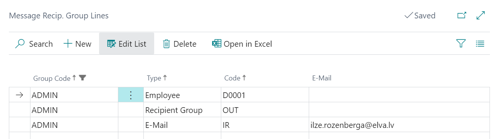
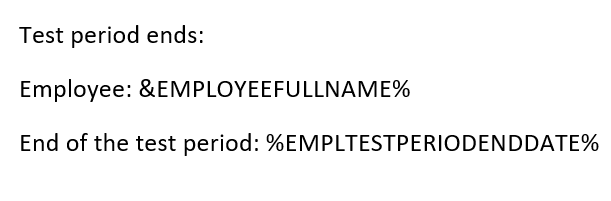
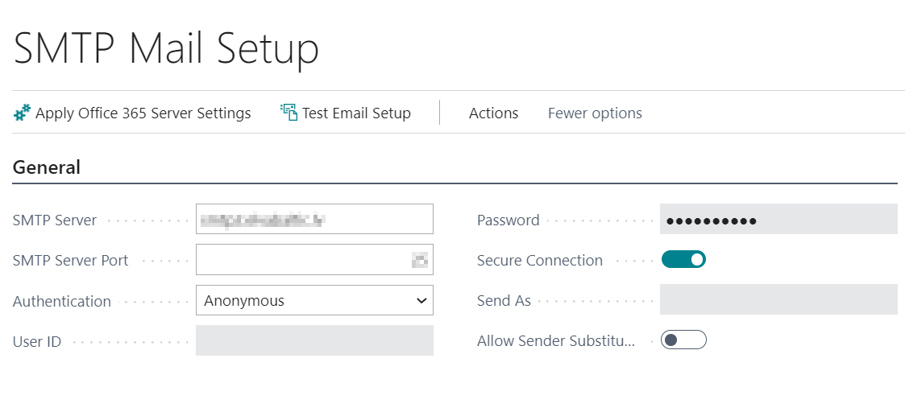
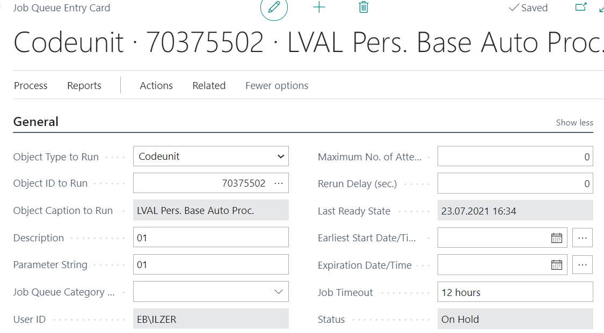
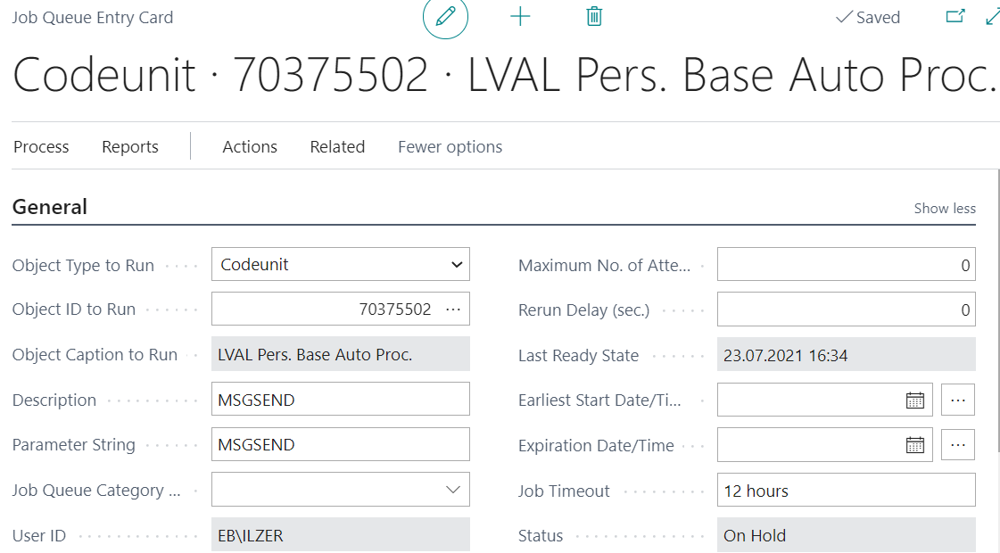

Creating Notifications
It is possible to automatically prepare and inform employees about important events in the company, as well as in addition to review a sent messages history.
All messages as well as their settings available when you open a list Messages.
Message Recipient Groups
In order not to add recipients one by one each time to a new message, which only applies to a particular recipients, it is possible to create a recipient groups. Open the list Message Recip. Groups. Create a new line for a new group and push the button Lines to attract the recipients.
Message recipient group line includes following fields:
- Group Code - a code form the list Message Recip. Groups, what is created by user;
- Type – Recipient group, E-Mail or Employee;
- Code – Code of recipient group or Employee number (if an e-mail is selected, simply type anything);
- E-Mail – filled only in case the message is sent to a person who is not a company employee.

It is possible to define a employee or a group of recipients in the message recipient group line. In this way it is possible to build larger message recipient groups from smaller groups, that combines a variety of employees. Recipients email will be picked up of all employees in the hierarchy of the recipient groups.
Message Event Setup
In addition need to fill in Message Event Setup, containing the following fields:
- Code – message code;
- Description;
- Auto Process Type – must be indicated in case of configured process queues, what means - automatic sending for defined events ( birthdays, passport valid due date, etc.). If the process queues are not configured, nothing should be completed.
- Recip. Group Code – a code from the list Message Recipient Groups;
- Send Employee;
- Send Department Manager;
- Last Message Date;
- Date Formula – must be defined if the message indicates the automatic process type;
- Date Formula 1 - must be defined if the message indicates the automatic process type;
- Date Formula 2 - must be defined if the message indicates the automatic process type;
- Template Code – message template.
- Requires Approval;
- Approval Recip. Group Code;
- Absence Filter – indicate the cause of absence code, if only a particular absence should be notified (start and end dates).
Message Templates
Create a new template code in the list Message Templates. Prepare MS Word Document, with a text of message. Instead of a variable text record a variable document field code with percentage. For example:

Pay attention that declensions are not available. Document field names are available at the appropriate message type in the list Message Event Setup, when clicking on the button Document Fields.
Prepared file Save with extension Web Page, Filtered (.htm,.html)
SMTP Mail Setup
To be able to send messages from the system must be completed SMTP Mail Setup, consisting of the following fields:
- SMTP Server – email transfer SMTP server address
- SMTP Server Port - a port number. The default setting is 25.
- Authentication – authentication mechanism (Anonymous – no user ID and password required; NTLM – Windows authentication will be used; Basic – The user and password specified in the next fields will be used.)
- User ID – in case if Basic authentication is selected;
- Password - in case if Basic authentication is selected.
- Send As - Specifies the ID of the user in whose name emails will be sent. For example, this can be useful when you want multiple people to be able to send messages that appear to come from a single sender, such as sales@companyname.
- Allow Sender Substitution - Specifies that the SMTP server allows you to change sender name and email.

Job Queue
Job Queues are created at Job Queue Entries. To each separate event should be create a job queue card and Object ID to Run should be indicated as 70375502

In the tab General can be seen the type of event you can define the periodicity. Should pay attention that the entries in the fields Description and Parameter String must be identical. To define the event, the user must have MS Business Central developing knowledge.
In the tab Recurrence it can be defined the sending interval of messages. This user can define itself. When defining the recurrence must be paid attention that, the number of minutes from one execution to the other is not less than time, what is necessary for processing a single message.
To be able to send out the created message, the system requires that in the Job Queue Entries list should be created a separate entry card with code MSGSEND, what should be repeated in fields Description and Parameter String

The history of messages sent to specific events can be viewed at Job Queue Log Entries. Journal contains the following fields:
- Status – in which event is at the moment of checking - successfully, happens, error;
- User ID – who has started this event process;
- Object Type to Run - specifies the type of the object that is to be run for the job;
- Start Date/Time;
- End Date/Time;
- Error Message – if the status is Error.